Project 4: Stitching and Mosaicking
CS 180: Computer Vision and Computational Photography, Fall 2024
Rebecca Feng
Part A: Image Warping and Mosaicing
Recovering Homographies
We need to define a homography matrix H in order to warp the perspective of
a given image. This is done by manually defining four correspondence points in our original
image, then an associating four corrrespondence points in the desired warped image.
The homography matrix has 8 free variables. For 2D images, the
homography matrix is a 3 by 3 matrix where:
\[
\begin{bmatrix}
a & b & c \\
d & e & f \\
g & h & 1
\end{bmatrix}
\]
and the free variables are given from letters a to h. Mathematically, we would like
to apply H to a given coordinate in our original image, (x,y), to a coordinate in
our final image, (x', y') , where:
\[
\begin{bmatrix}
a & b & c \\
d & e & f \\
g & h & 1
\end{bmatrix}
\begin{bmatrix}
x \\
y \\
1
\end{bmatrix}
=
\begin{bmatrix}
w*x' \\
w*y' \\
w
\end{bmatrix}
\]
\[
w = gx + hy + 1
\]
Expressing free variables a through h as a vector,
\begin{align*}
&\begin{cases}
ax + by + c = wx' \\
dx + ey + f = wy' \\
gx + hy + 1 = w
\end{cases}
\\
\implies
&\begin{cases}
ax + by + c = (gx + hy + 1) x' \\
dx + ey + f = (gx + hy + 1) y'
\end{cases}
\\
\implies
&\begin{cases}
ax + by + c - gxx' - hyx' = x' \\
dx + ey + f - gxy' - hyy' = y'
\end{cases}
\\
\implies
&\begin{bmatrix}
x & y & 1 & 0 & 0 & 0 & -xx' & -yx' \\
0 & 0 & 0 & x & y & 1 & -xy' & -yy' \\
\end{bmatrix}
\begin{bmatrix} a \\ b \\ c \\ d \\ e \\ f \\ g \\ h \end{bmatrix}
=
\begin{bmatrix} x' \\ y' \end{bmatrix}
\end{align*}
We can solve for what variables a through h are, if we have four correspondence points;
We can stack those correspondence points on the right hand matrix representing the coordinate
buffer. The matrix is invertible, and we can uniquely define variables a through h if the
right hand buffer is a square matrix (8 by 8). We can also define more correspondence points
as needed, and perform least-squares to determine the best a through h values.
For least squares, we have an n by 8 right hand side matrix A (where n is 2 times number of
correspondence points to account for the x and y coordinates), and a resulting vector B with
dimensions n by 1, representing the transformed coordinates. We can solve for the vector
representing H's free variables a through h, denoted as H', as follows:
\begin{align*}
\\
AH' = B
\\
\implies
A^{-1}AH' = A^{-1}B
\\
\implies
H' = A^{-1}B
\end{align*}
And determine the parameters of H this way.
Image Rectification and Warping
We can apply H to the corners of our image and warp the entire image
to the new perspective grid. Once we get the positions of the
corners of our warped image, we then come up with an inverse H in order to
sample points from our original image, using a bilinear interpolation sampling
method in order to ensure antialiasing (speciially, scipy's griddata).
If, upon applying H to the corners of our original image, the warped image's
corners have negative values, then we would have to shift the image up, so that the
top left corner rests at image coordinates (0,0).
Here are some results of warping each image to a new perspective grid, so that
it would appear to the viewer that we are looking face-on at something in the image.
I drew the temple a while back!
|
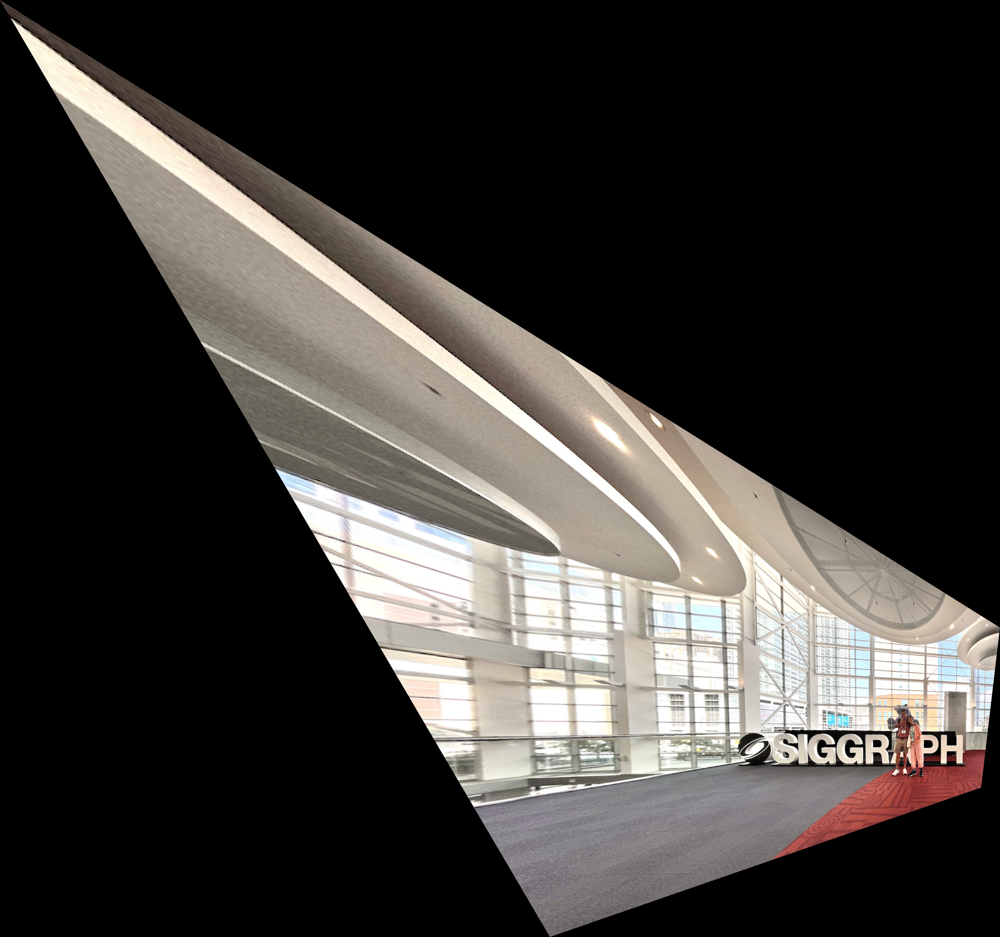
Warped SIGGRAPH picture
|
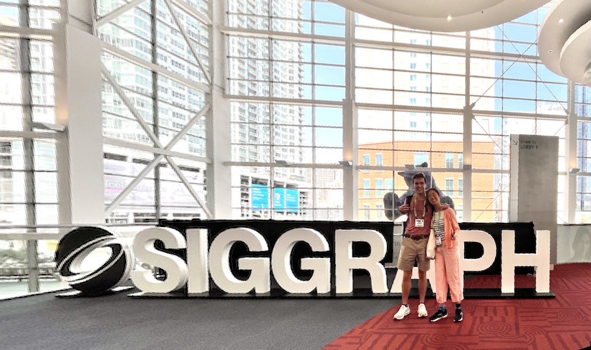
Warped SIGGRAPH picture, cropped
|
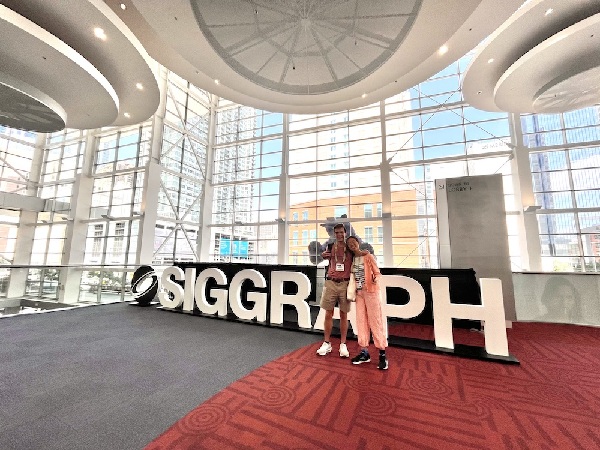
Original SIGGRAPH picture
|
|
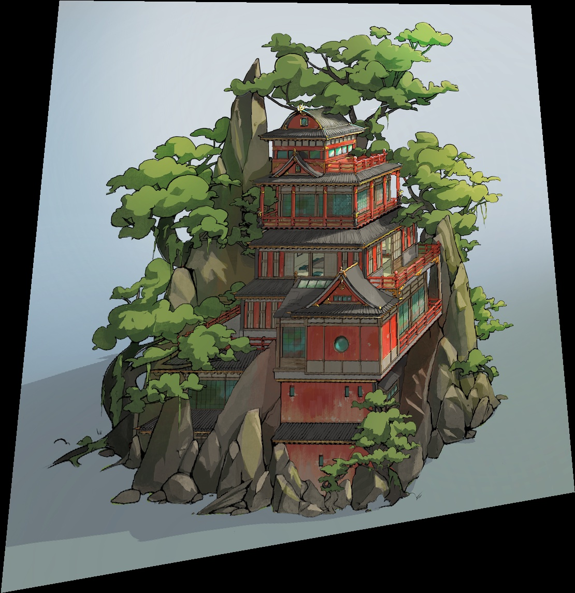
Warped temple drawing, front side
|
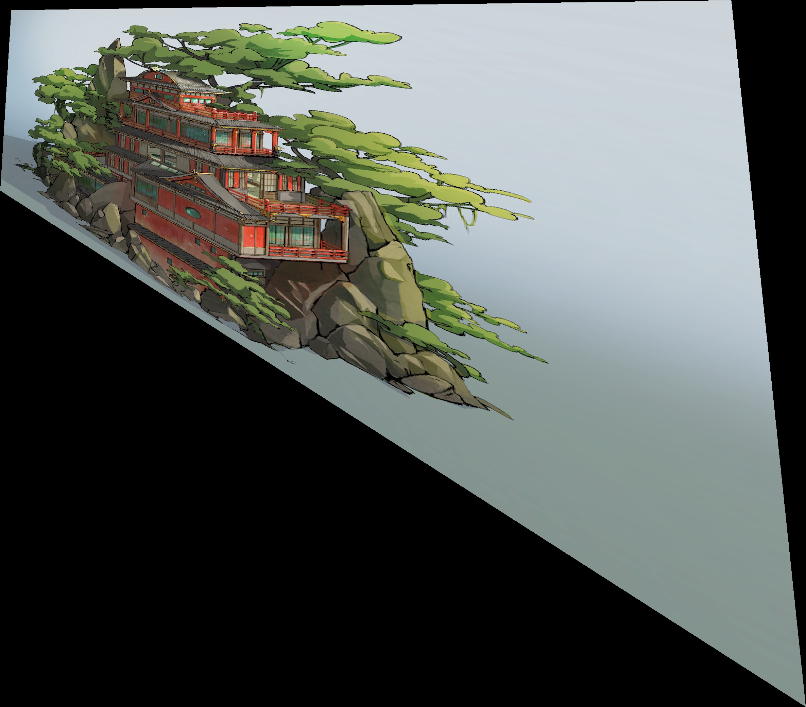
Warped temple drawing, right side
|
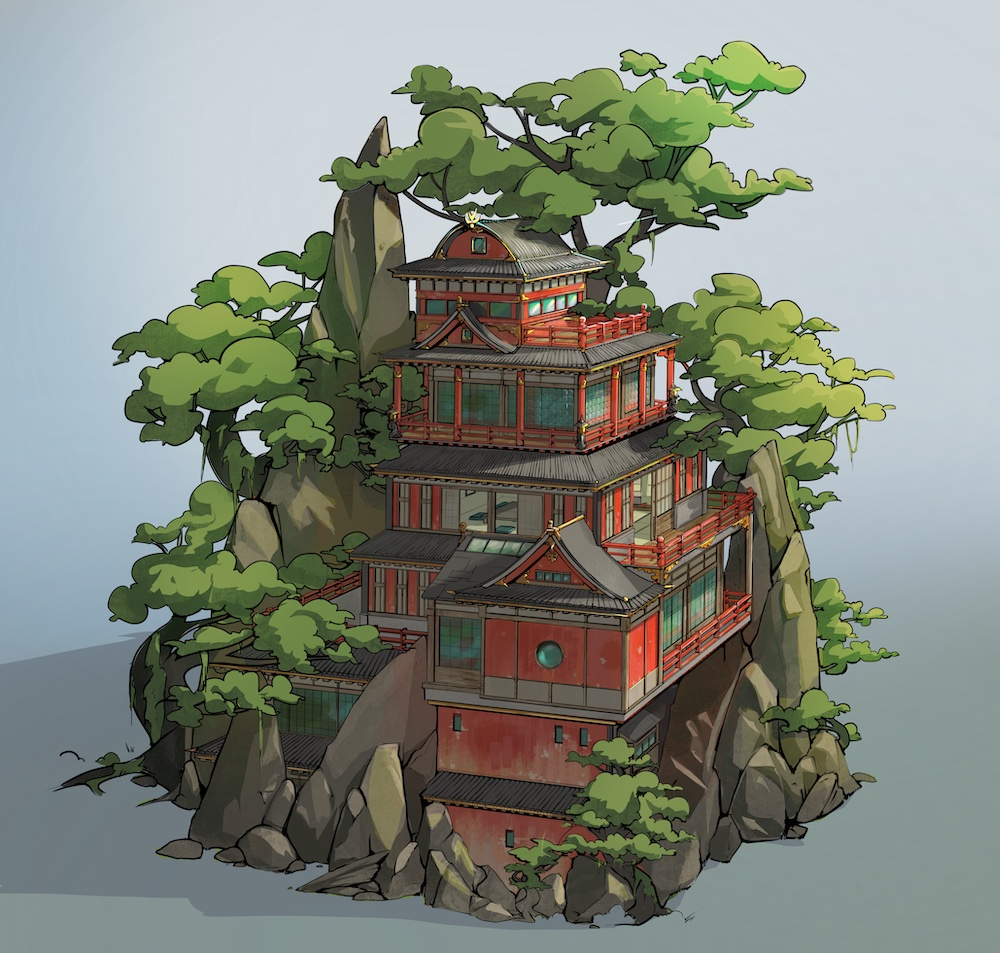
Original temple picture
|
Image mosaicking
We can apply the previous idea multiple times to different
images to warp each image's correspondence points to another
image's correspondence points. For example, we can define common correspondence
points at the corners of the blackboard in order to stack each warped image in
the set of images, one-by-one.
In my implementation, I warped each image on top of another one by one. Image 2's
was warped onto Image 1 by finding H transforming Image 2's correspondence points to Image 1's
correspondence points. Then, we can stack together the images and blend them using a distance
mask, and multi-band pass filtering described in project 2.
Then, I warp Image 3's correspondence points onto Image 1 and 2's correspondence points (which
should be in the same position as before, but shifted due to resizing the image when merging
the warped image with the original), and so on.
For multiresolution blending, we must input the two images in their respective positons in
the final image buffer, and a mask to blend the two images together.
In order to compute the mask, we need to determine a good line between the two images
intersecting each other.
For each image, we can first apply a bwdist
filter. The Python equivalent of this is
scipy's Euclidean distance transform method.
Afterwards, we compare the two image buffers to see at which positions in the array that the
1st image has a higher bwdist value than the second image. In other words,
image1bwdist > image2bwdist gives us a boolean buffer that we can convert to
a float buffer (for computation), where a particular pixel given a coordinate in the image
buffer is black if image1's bwdist at that coordinate has a higher pixel value than image2's
bwdist.
The float buffer will be the mask that we will pass into the multiresolution blending function,
in order to blend our two images together.
Here are some results, as well as the input images:
Campbell hall
Flowers on my desk
Joe
There are some slight artifacting issues due to the camera being slightly out of
position when taking photos, as well as different levels of automatic exposure and lighting
when taking photos at various angles. Multiresolution blending helped greatly with
blending two images with different lighting conditions. Additionally, the slight black, blurred
border in the mosaicked images are a byproduct of the laplacian and gaussian stacking, and that
pixel values outside of the warped image in the final image buffer are black. I used a
blur factor as small as possible to minimize the noticeability of the black borders, but
large enough to seamlessly blend two warped images together in the colored portions.
Part B: Feature Matching for Autostitching
We move our focus away from manual point-to-point correspondences, and
construct an algorithm that automatically detects corners and point correspondences
for image stitching. Lots of ideas in this half heavily reference
this paper.
Harris Corners and Adaptive Non-Maximal Suppression
We compute the Harris corners of an image. After computing a Harris matrix,
we take its peaks to find where the corners are in the image. Here is an example
of the Harris points that we generated on top of the original image:
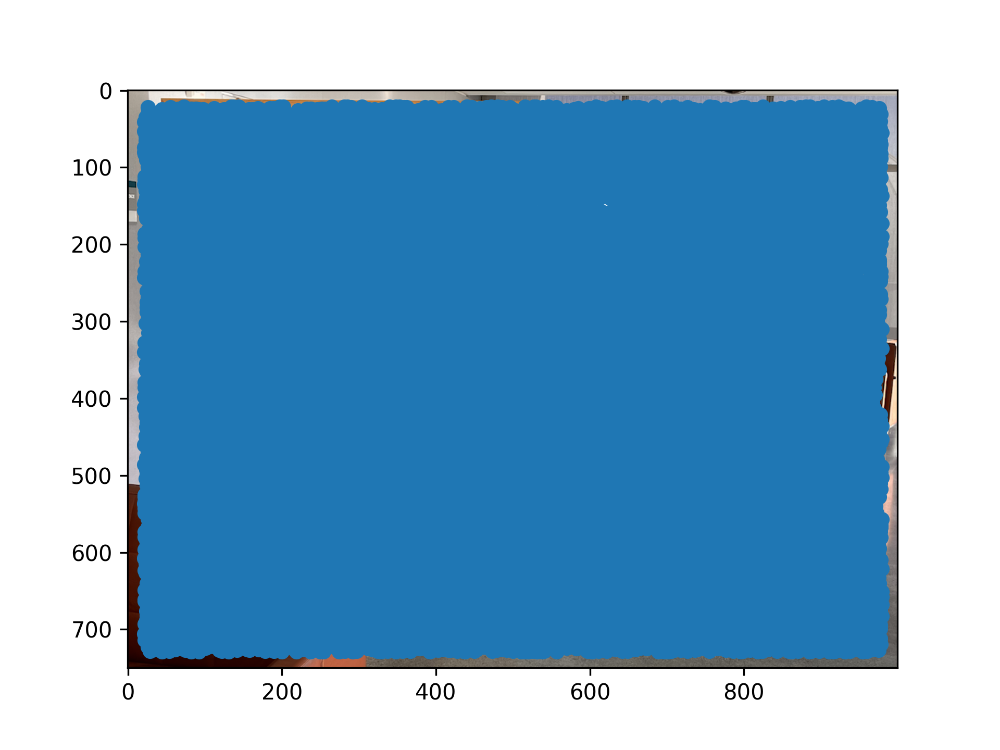
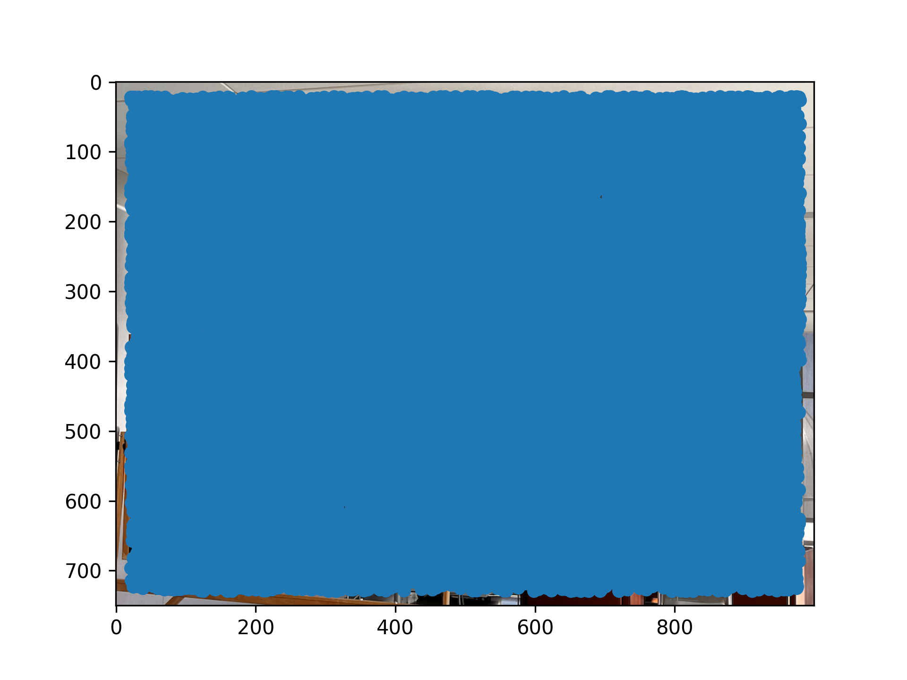
From the code given, there seems to be a never-ending plethora of points. We
want to filter out some of the corners so that we get a more spaced-out distribution. This
allows us to effectively and efficiently compute point-to-point correspondences and match features.
We reference the paper and use the adaptive non-maximal suppression (ANMS) algorithm
to achieve this.
ANMS is an optimization problem. We compute the distances between all points from each other (so
if there are n points, then we have n * (n-1) nonzero distances between all points).
We specify m points that we want to keep in our set of points.
We want to find the best m points so that they have the smallest
distance to some other point satisfying this property:
\[f(x_i) < c_{robust} f(x_j)\]
where
-
$f(x_i)$ - the value of the harris matrix value at the position of point i
-
$f(x_j)$ - the value of the harris matrix value at the position of point i
-
$c_{robust}$ - a constant, ensuring that there is a significant difference between
what $f(x_i)$ and $f(x_j)$ should be. In our implementation, this value is 0.9
Qualitatively, we would like to keep the set of points that exhibit high
corner intensity and are evenly spaced out.
After applying ANMS to our Harris corners, the points get whittled down significantly:
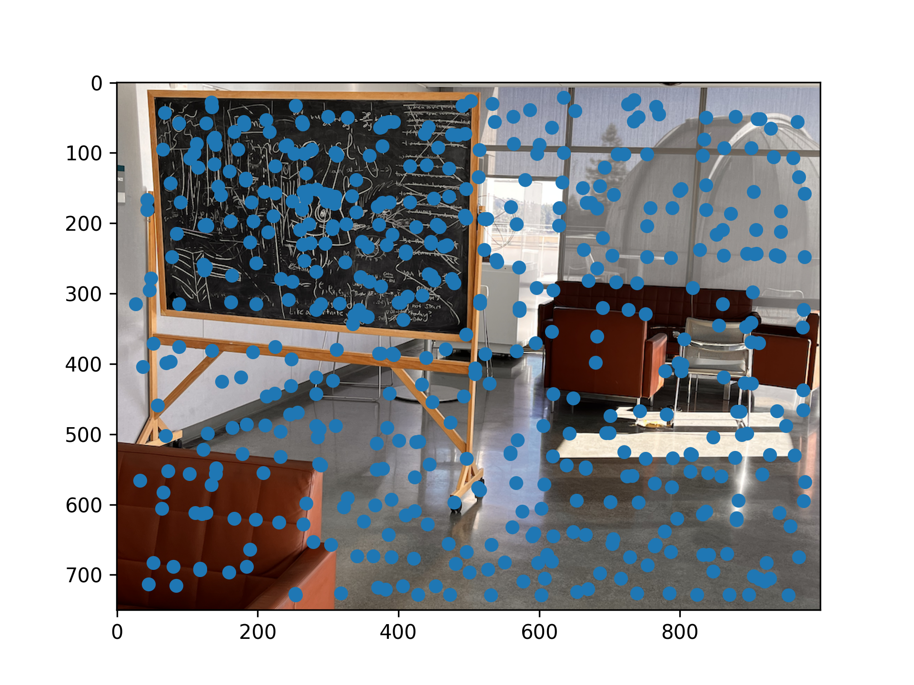
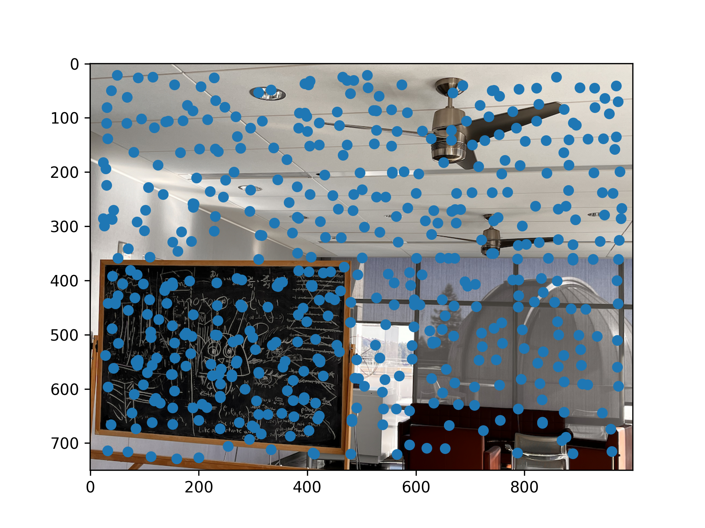
Finding and Matching Features
Now, we need a way to match together one point from one
image to a corresponding point in the other image in order to stitch them together.
We can do so by matching together the features of each point. Additionally, there might
be some points generated in one image (due to corner detection) that have no correspondence
with any point in the second image. We would like to get rid of those points.
We consider a small subsection of the original image surrounding a given point,
and call it that point's "feature". The first ten features of the two images are shown below:
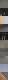
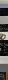
These features are generated by taking the 40 by 40 pixel neighborhood surrounding a given point,
then subsampling with antialiasing into an 8x8 square.
We do this for all points in the image, and the other image
that we would like to stitch together. For each point in the first image, we get its feature,
go through all the features in the second image, and find the best match between the first
image's feature and hte second image's feature. If a point in the first image lies on the top
left corner of the blackboard, and a point in the second image lies on the top left of the blackboard,
then these points would correspond to each other. Additionally, their pixel values in their
respective feature would be very similar.
In order to determine whether or not a feature in one image corresponds to a feature in another,
we compare their pixel values using the sum of squared distances and a 2-nearest
neighbor approach with Lowe's trick. We have a match between two features if
the proportion between their sum of squared errors (so the lowest error / second lowest error)
is less than 0.4. So there is a significant difference between the best feature-to-feature matches.
This method also whittles down around 80% of the points as well.
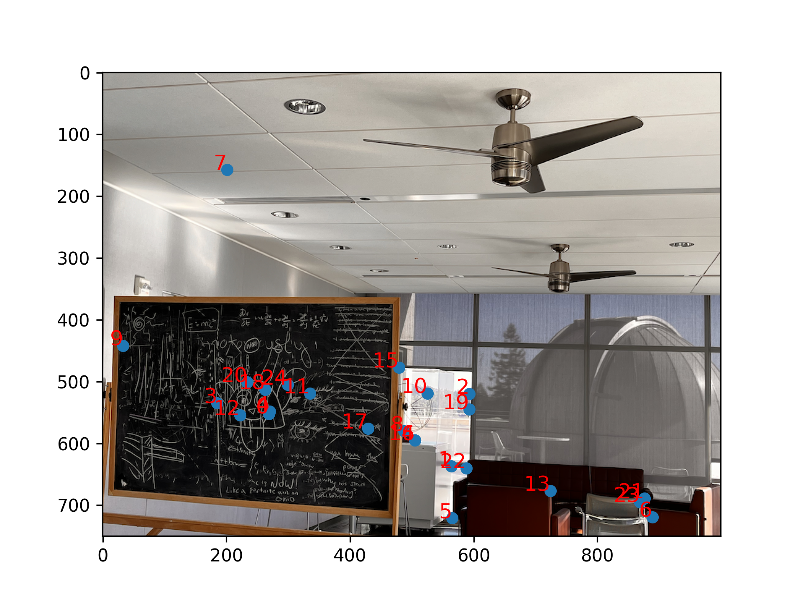
The point correspondences are labeled. For example, point 11 in image 1 corresponds with point 11 in
another image.
RANSAC
On closer look, some of the point correspondences above don't seem to match up completely;
for example, point 7 is located on the Treffers observation dome on the left image, whereas
point 7 is located on the ceiling in the right image. We do not want to consider point 7
in our set of correspondence points needed to calculate the homogrpahy matrix between
the two images. Otherwise, our output would be terribly misaligned.
We use the Random sample consensus method (RANSAC) to get rid of points like 7 contributing
to misalignment. We consider 100 random combinations of 4 points, sampled from the total set
of points outputted by feature matching. We compute the homography matrix for each combination
of 4 points, then see if the homography aligns well with other points not in our set. We compute
the number of "inliers," or the number of points closest to our homography matrix transformation,
per combination of 4 points. We consider a point to be an inlier if, upon applying the homography,
maps a point from the original image to be within 1 pixel of the actual point's posiiton in the
new image. We consider only the homography matrix that results in the greatest amount of inliers.
After finding the optimal four point correspondences this way, we compute the associating
homography matrix, and delete the outliers from our set of point correspondences/features.
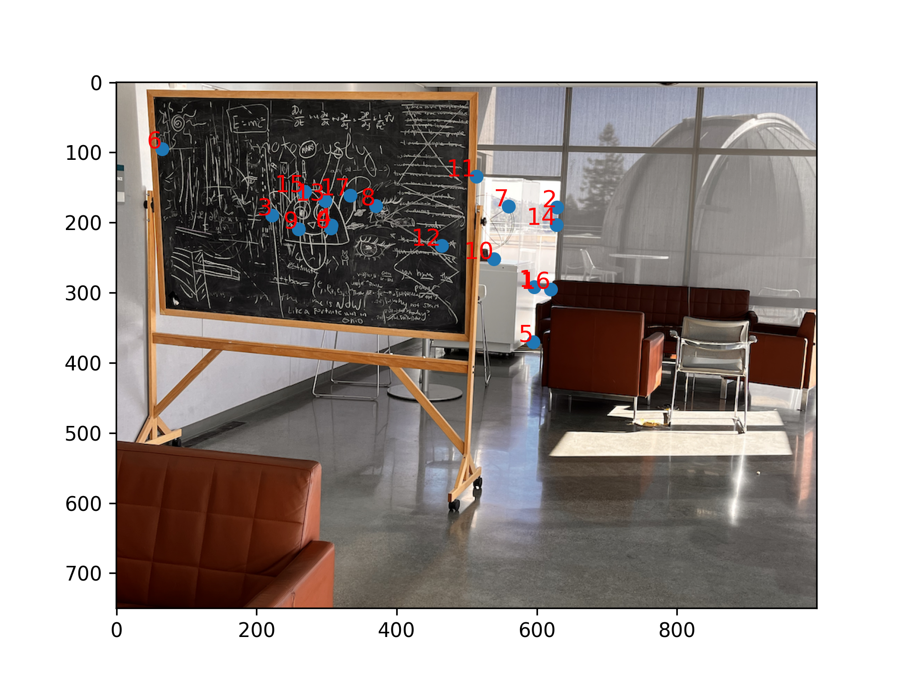
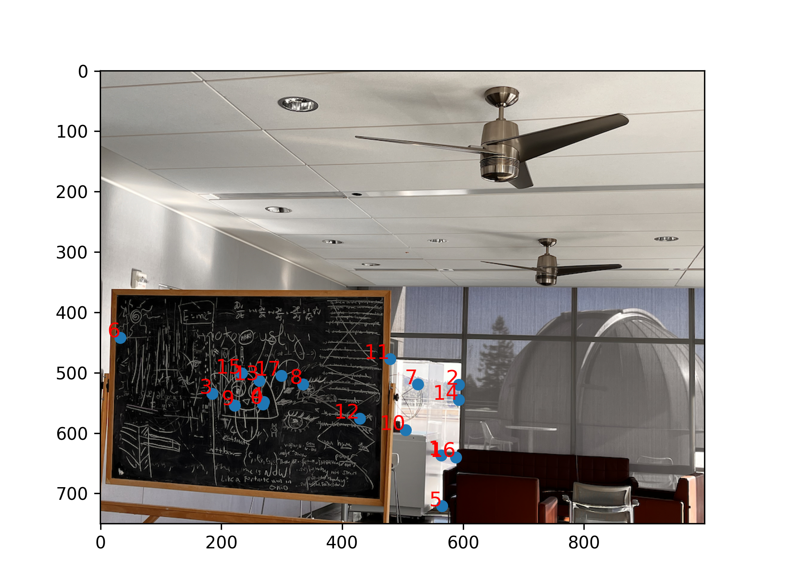
The point to point correspondences in each image are way better after applying RANSAC than
before!
Results and Comparison
We compare the images resulting from manual point-to-point correspondences (part A)
with automatic point-to-point correspondences (Part B). We see slight improvement in the automatic
implementation (except for the Joe image stitching, which is probably due to the point
correspondences all being clustered around the table).
|
Automatic
|
Manual
|
|
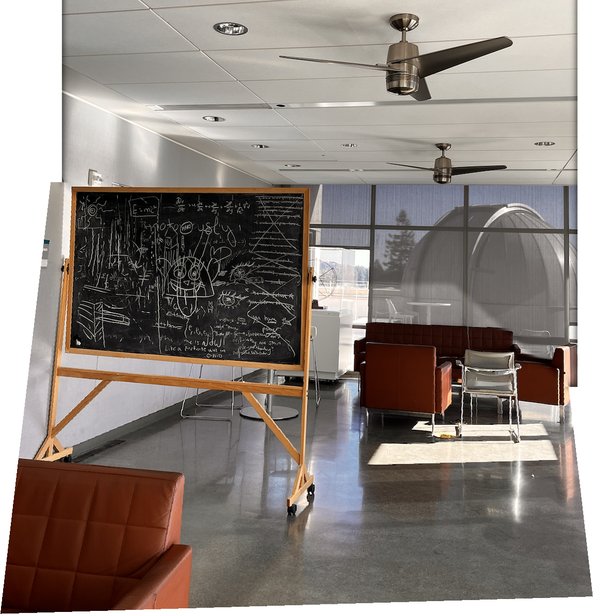
|
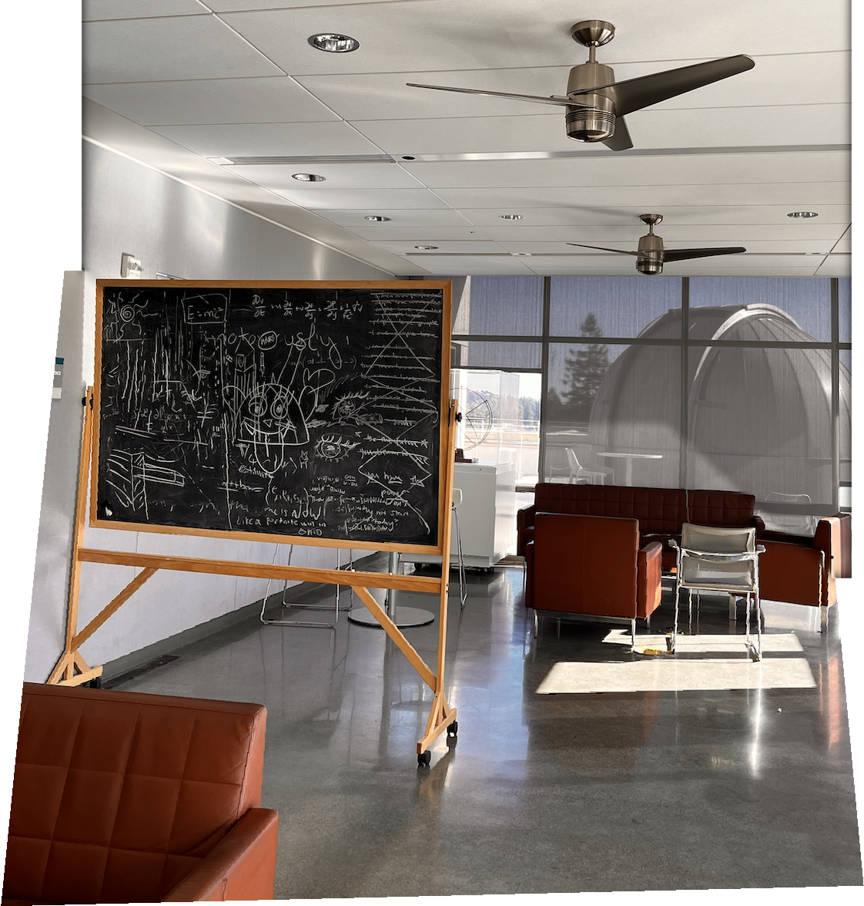
|
|
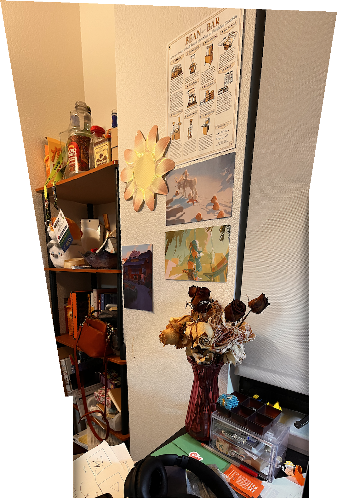
|
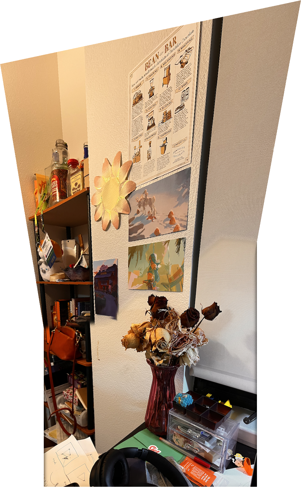
|
|
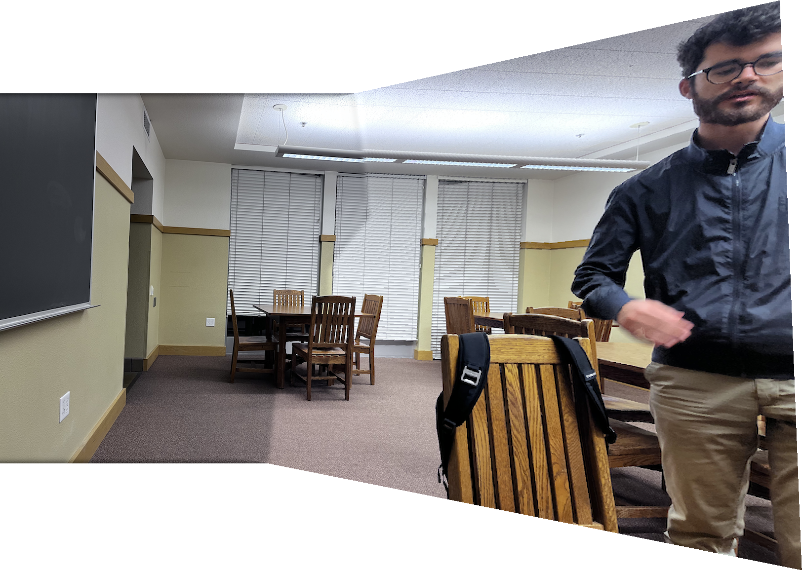
|
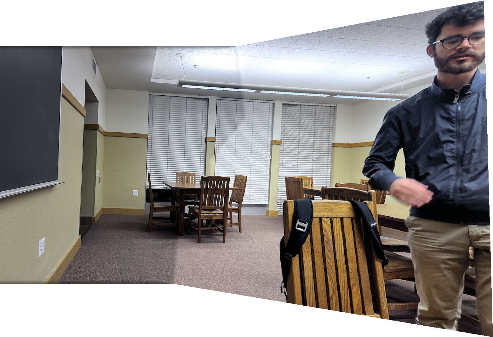
|
Bells and Whistles
Multiscale Corner Detection and Feature Mapping
We can improve image alignment by detecting corners at various pyramid levels of the image as presented in the MOPS
paper, then extract features out that way. Additionally, we can compute an orientation vector of a corner. I downscaled
the image resolution so that the box sizes are more visible for the entire image per level. Notice how less corners are
detected at higher pyramid levels in the Gaussian stack:

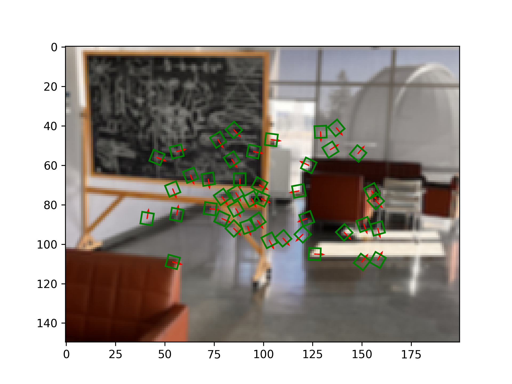

Here are a few of the features at each level of the pyramid, from left to right, the
highest resolution to the lowest. Each feature vector per pyramid level do not necessarily
have the same corners as others. Additionally, it is a little hard to notice any
large difference, since all the feature vectors get subsampled anyway:
|
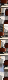
|

|
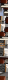
|
Rotation invariance
Let's say we want to stitch together two images, but one image is rotated at a particular angle.
Not many matching features will get computed because the features in the rotated image will
also get rotated. Thus, taking the sum of squared distances between each feature vector
would result in high amounts of error, even if the two feature vectors are pointing at the same
point. Thus, it is important that we add support for stitching together images that are rotated.
We were able to compute the orientation vector of each correspondence point from the previous
section. We can leverage this by re-orientating each feature vector such that their orientation
vectors for each feature will be 0. Upon doing this, then both images' features will be
orientated the same direction, and we can apply sum of squares as usual.
I subsampled the feature vectors in the Campbell Hall image. First, I rotated
the image around the correspondence point by the amount specified by the orientation vector,
then subsampled the surrounding neighborhood of pixels. Compare the rotation of the
feature vectors with the feature vectors before rotation:
|
Before rotation
|
|
After rotation
|
|
|
|
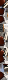
|
Part A Bells and Whistles
Here are some creative results! I computed the H needed to warp the drawing
onto the blackboard, and overlayed the two images together:
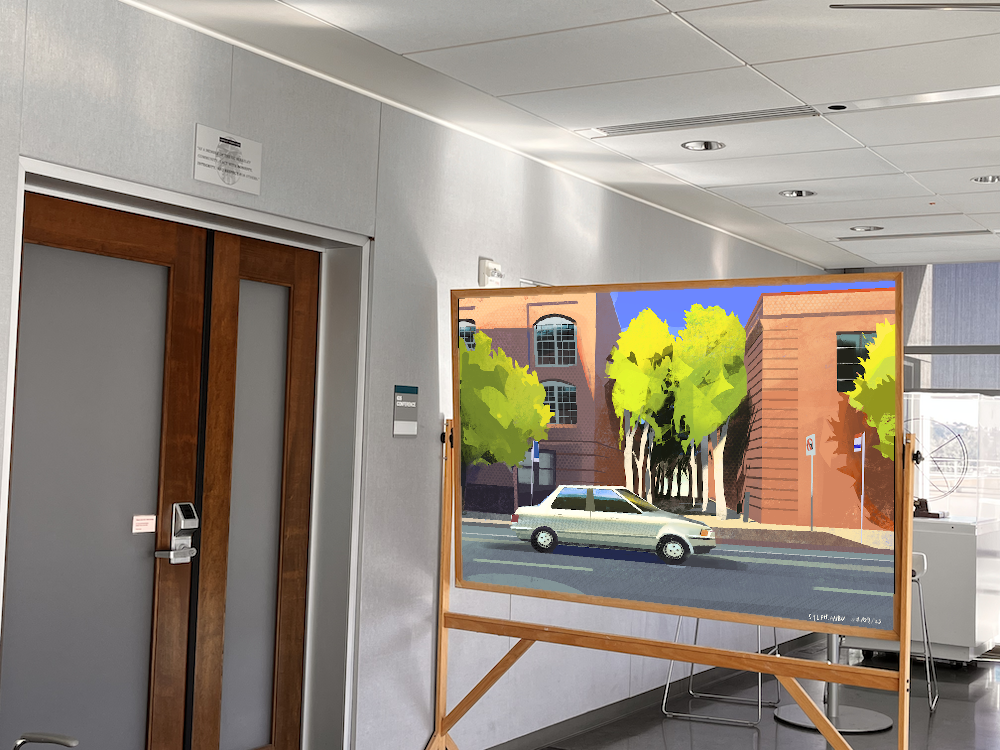

|
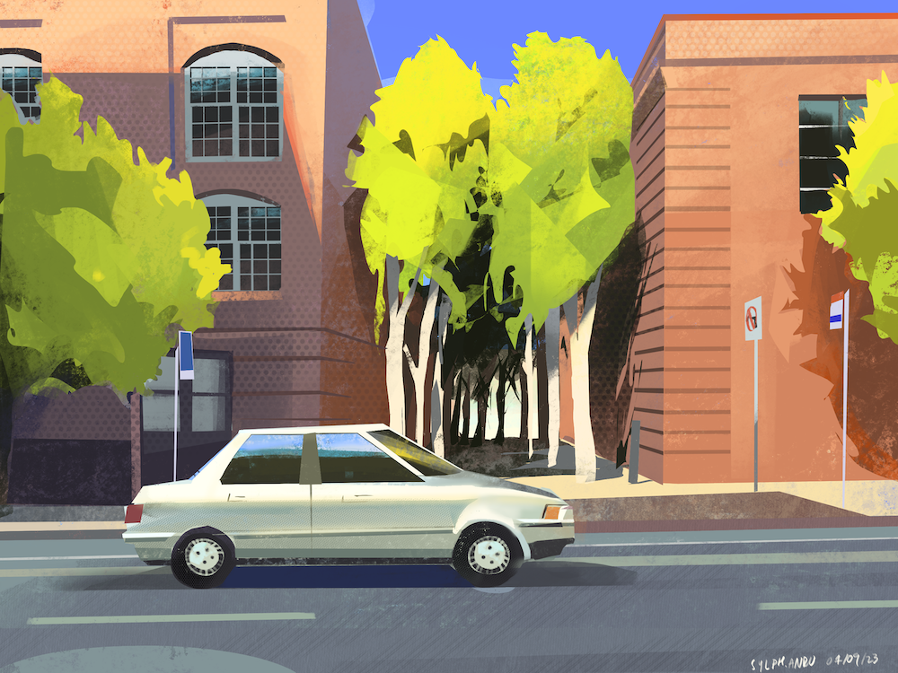
|
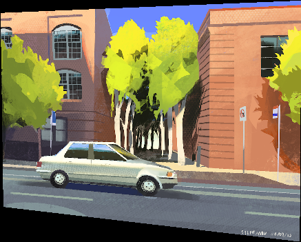
|